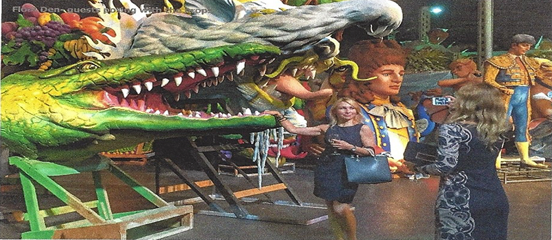
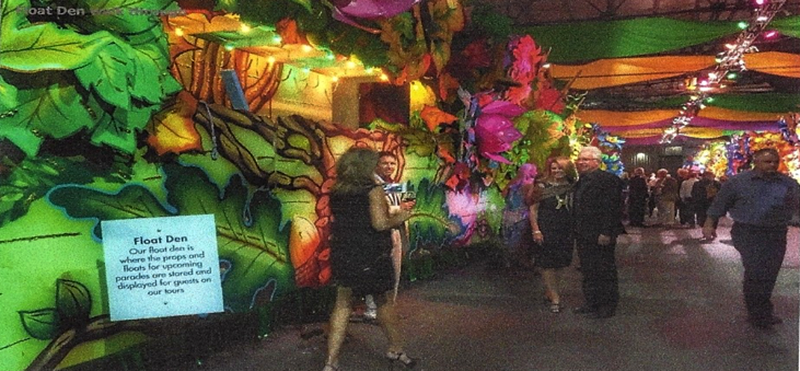

Social Event
NAACL 2018 Social Event, Sunday, June 3rd, beginning at 6:45-7:00pm
Catch the shuttle bus outside of the Hyatt Regency New Orleans, conference hotel, between 6:45 and 7pm. This will take you the short ride to:
Blaine Kern's Mardi Gras World
Mardi Gras World is a world of wonders created for you by the people who bring Mardi Gras to life every year—the artists of Blaine Kern Studios. It’s all in one magical place where you can peek behind the curtain and see Mardi Gras in the making.
Since 1947, Blaine Kern Studios has been as much a part of Carnival as the parades New Orleans loves. In fact, they create most of those parades, from concept through completion. They are the world’s leading makers of floats, sculpture and props. Their work and props are located in theme parks, casinos and amusement parks around the globe—from here to Shanghai.
Your event begins with a walk through of the float den among larger-than-life works of art. Visit The Studio, where you can watch artists designing, carving, painting and building for next year’s parades. Guests will explore props of every theme imaginable while enjoying passed hors d'oeuvres and a traditional New Orleans band, complete with a Grand Marshall.
Guests will then follow stilt walkers to make their way to the dockside River City Plaza and River City Ballroom for New Orleans' famous cuisine and libations and live Zydeco, funk, soul and R&B from one of the best performers in the city. This will surely be a night to remember!
